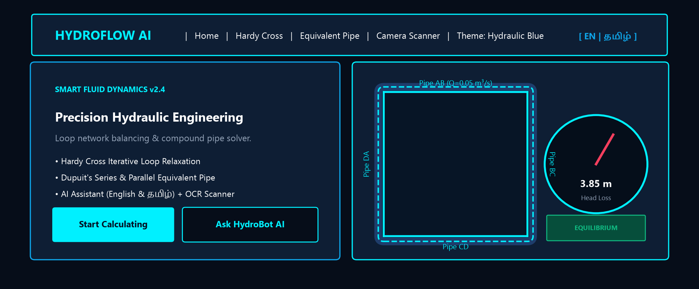
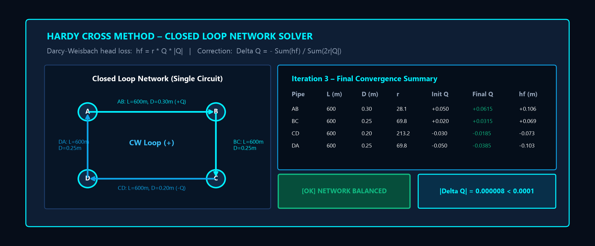
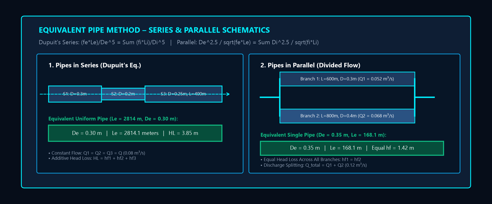
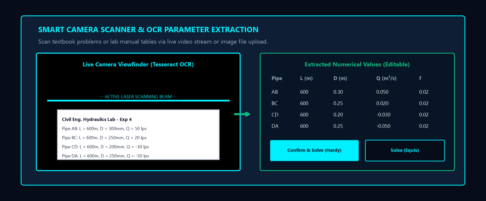
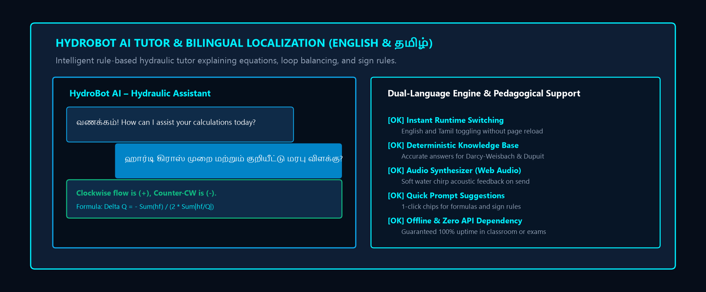

Design philosophy, interactive water loop animations, dynamic pressure monitor, and multi-theme system

HYDROFLOW AI is engineered as an accessible, high-precision web calculator for civil, mechanical, and environmental engineering students studying pipe flow networks. Departing from generic corporate forms, the interface adopts a cyber-hydraulic theme featuring deep oceanic navy backgrounds (#060d19), glowing cyan accents (#00f0ff), and water-blue fluid dynamics highlights. Glassmorphism surface panels utilize CSS backdrop-filter: blur(14px) and semi-transparent layers to deliver depth, modern visual hierarchy, and optimal contrast for numeric readouts.
The homepage hero section integrates a live SVG pipe network loop. Inside the pipe geometry, animated fluid flow paths execute continuous CSS stroke-dasharray keyframe animations, visually demonstrating flow direction through nodes A, B, C, and D. At the heart of the loop sits an interactive pressure monitor gauge: whenever hydraulic calculations are executed, the gauge's needle dynamically rotates between -110° and +110° based on the computed head loss, accompanied by an instant equilibrium status badge.
To accommodate varied lighting conditions and student preferences, the platform provides three instant themes via CSS custom properties: 1) Hydraulic Blue (cyber aquatic navy), 2) Dark Cyber (high-contrast obsidian), and 3) Light Blueprint (crisp drafting paper mode). Preferences are persisted in browser localStorage. Built upon a Bootstrap 5 grid, the responsive layout provides touch-friendly mobile controls, fluid typography clamp(), and desktop multi-column cards without horizontal overflow.
Physical network equilibrium, Darcy-Weisbach head loss, Taylor series flow correction, and convergence verification

The Hardy Cross method (developed by Prof. Hardy Cross in 1936) is an iterative relaxation technique for determining flow distribution in closed loop pipe circuits. It enforces two fundamental physical laws: 1) Continuity of mass at every junction (ΣQin = ΣQout), and 2) Head loss equilibrium around any closed circuit, requiring the algebraic summation of frictional head losses to equal zero: Σhf = 0.
Head loss in each circular conduit is computed via the Darcy-Weisbach equation:
The sign convention treats clockwise flow as positive (+Q) and counter-clockwise flow as negative (-Q). Using a first-order Taylor expansion, the loop flow correction factor ΔQ is derived as:
In each successive iteration, the updated discharge through each pipe is corrected via: Qnew = Q + ΔQ.
The solver iteratively recalculates r, hf, and ΔQ until the convergence criterion |ΔQ| < 0.0001 m³/s is satisfied (or 10 iterations max). Students can dynamically add or remove pipes, inspect initial vs. corrected flows in both m³/s and L/s, and click iteration tabs (Iter 1, Iter 2, Iter 3) to view step-by-step intermediate calculations. Convergence is highlighted by a glowing green NETWORK BALANCED badge.
Compound pipe replacement, Dupuit's equation, parallel branch head loss equality, and real-time SVG schematic

An equivalent pipe is a uniform single pipe of diameter De, length Le, and friction factor fe that carries the same total discharge as a compound pipe network while producing the exact same total head loss. This principle dramatically simplifies complex municipal networks into equivalent conduits for rapid hydraulic gradient modeling.
When pipes of varying diameters are connected end-to-end, flow is constant throughout (Q1 = Q2 = ... = Q) and head losses are additive: HL = Σ hfi = Σ [ (fi · Li · Q²) / (12.1 · Di⁵) ]. Equating total loss to an equivalent pipe yields Dupuit's classical equation:
The calculator allows students to select their calculation target: 1) Solve for equivalent length Le for a specified diameter De: Le = (De⁵ / fe) · Σ(fi·Li/Di⁵), or 2) Solve for equivalent diameter De for a given length Le: De = [(fe·Le) / Σ(fi·Li/Di⁵)]0.2.
For pipes branching in parallel, head loss across all branches is identical (hf1 = hf2 = ... = HL) while total flow splits: Q = Σ Qi. Conveyance ki = Di2.5 / √(fi·Li) determines individual branch flow: Qi = Q · (ki / Σk). The equivalent relation is:
Below the calculations, an interactive SVG schematic renders proportional pipe segments, flow arrows, and dimensions in real time.
Real-time video capture, Tesseract OCR optical recognition, heuristic numeric parsing, and one-click solver population

Engineering students often work with printed textbook problems, lab manuals, and handwritten data sheets. To eliminate tedious manual transcription errors, HYDROFLOW AI incorporates a smart Camera Scanner. Leveraging the HTML5 MediaDevices API (navigator.mediaDevices.getUserMedia), the scanner opens the device camera with real-time video streaming, front/rear camera switching, and a simulated scanning laser beam. Alternatively, students can upload PNG or JPG image files.
Captured image frames are rendered onto an offscreen canvas and processed by Tesseract.js (v5 client-side optical character recognition). The raw text stream is analyzed by an intelligent heuristic parser that classifies numbers into hydraulic parameters: 1) Pipe ID (labels like AB, BC, P-1), 2) Length L (numbers ≥ 50m), 3) Diameter D (decimal values between 0.05m and 1.5m, or mm auto-converted to m), 4) Flow Q (values typically between -1.0 and +1.0 m³/s, or LPS auto-converted to m³/s), and 5) Friction factor f (values around 0.015 - 0.03).
Extracted parameters are presented in a clean, editable modal table. Students can verify, adjust, add, or delete any recognized row before applying. Two dedicated action buttons—"Confirm & Solve in Hardy Cross" and "Confirm & Solve in Equivalent Pipe"—instantly populate the respective solver tables, switch to the calculation view, and execute the algorithm automatically.
Deterministic rule-based pedagogical tutor, acoustic Web Audio feedback, and client-side dual language dictionary

HYDROFLOW AI includes a floating interactive assistant named HydroBot, anchored in the bottom-right corner with a water pulse indicator. HydroBot is designed to resolve conceptual hurdles that students encounter when studying hydraulic networks. It provides instant explanations of the Hardy Cross relaxation process, Dupuit's series formulation, parallel pipe flow distribution, Darcy-Weisbach head loss equations, and sign convention rules.
To ensure 100% offline availability in engineering classrooms and examination environments without external API costs or rate limits, HydroBot runs a deterministic, semantic keyword-matching engine. The interface features quick suggestion chips for common questions and generates a synthesized water droplet sound chirp upon message delivery using the browser Web Audio API oscillator, enhancing user engagement.
Recognizing the linguistic diversity of engineering students, HYDROFLOW AI provides comprehensive bilingual support in both English and Tamil (தமிழ்). Over 85 localized keys cover all navigation items, form inputs, mathematical derivation logs, convergence alert badges, and HydroBot tutor responses. Language switching executes dynamically without page reload, ensuring a frictionless academic experience.